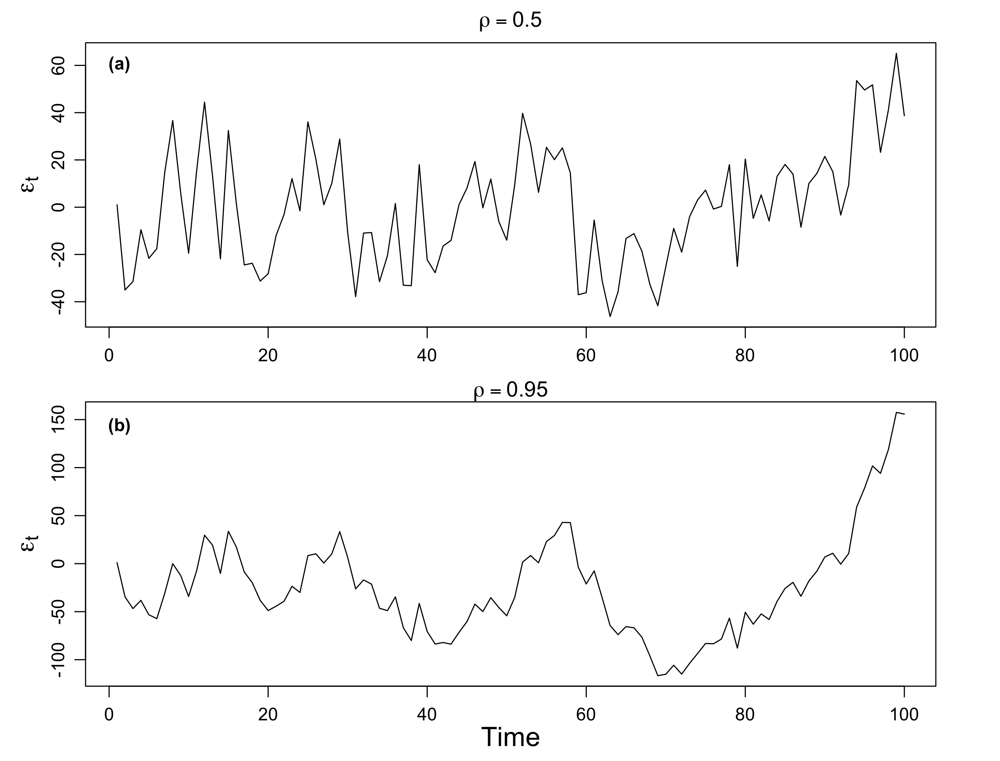

4 AR(1)
Time series data often display autocorrelation, or serial correlation of the disturbances across periods.
If you plot the residuals and observe that the effect of a given disturbance is carried, at least in part, across periods, then it is a strong signal of serial correlation. It’s like the disturbances exhibiting a sort of “memory” over time.
4.1 AR(1) Visualization
The first-order autoregressive process, denoted AR(1), is \[ \varepsilon_t = \rho \varepsilon_{t-1} + w_t \] where \(w_t\) is a strictly stationary and ergodic white noise process with 0 mean and variance \(\sigma^2_w\).
To illustrate the behavior of the AR(1) process, Figure 4.2 plots two simulated AR(1) processes. Each is generated using the white noise process et displayed in Figure 4.1.
The plot in Figure 4.2(a) sets \(\rho=0.5\) and the plot in Figure 4.2(b) sets \(\rho=0.95\).
Remarks
- Figure 4.2(b) is more smooth than Figure 4.2(a).
- The smoothing increases with \(\rho\).

We have seen the cases when \(\rho\) is positive, now let’s consider when \(\rho\) is negative. Figure 4.3(a) shows an AR(1) process with \(\rho=-0.5\), and Figure 4.3(a) shows an AR(1) process with \(\rho=-0.95\,.\)
We see that the sample path is very choppy when \(\rho\) is negative. The different patterns for positive and negative \(\rho\)’s are due to their autocorrelation functions (ACFs).

Possible causes of serial correlation: Incomplete or flawed model specification. Relevant factors omitted from the time series regression are correlated across periods.
4.2 Mathematical Representation
Let’s formulate an AR(1) model as follows:
\[ \begin{align} \varepsilon_t = \rho \varepsilon_{t-1} + w_t \end{align} \tag{4.1}\]
where \(w_t\) is a white noise series with mean zero and variance \(\sigma^2_w\). We also assume \(|\rho|<1\).
We can represent the AR(1) model as a linear combination of the innovations \(w_t\).
By iterating backwards \(k\) times, we get
\[ \begin{aligned} \varepsilon_t &= \rho \,\varepsilon_{t-1} + w_t \\ &= \rho\, (\rho \, \varepsilon_{t-2} + w_{t-1}) + w_t \\ &= \rho^2 \varepsilon_{t-2} + \rho w_{t-1} + w_t \\ &\quad \vdots \\ &= \rho^k \varepsilon_{t-k} + \sum_{j=0}^{k-1} \rho^j \,w_{t-j} \,. \end{aligned} \] This suggests that, by continuing to iterate backward, and provided that \(|\rho|<1\) and \(\sup_t \text{Var}(\varepsilon_t)<\infty\), we can represent \(\varepsilon_t\) as a linear process given by
\[ \color{#EE0000FF}{\varepsilon_t = \sum_{j=0}^\infty \rho^j \,w_{t-j}} \,. \]
4.2.1 Expectation
\(\varepsilon_t\) is stationary with mean zero.
\[ E(\varepsilon_t) = \sum_{j=0}^\infty \rho^j \, E(w_{t-j}) \]
4.2.2 Autocovariance
The autocovariance function of the AR(1) process is \[ \begin{aligned} \gamma (h) &= \text{Cov}(\varepsilon_{t+h}, \varepsilon_t) \\ &= E(\varepsilon_{t+h}, \varepsilon_t) \\ &= E\left[\left(\sum_{j=0}^\infty \rho^j \,w_{t+h-j}\right) \left(\sum_{k=0}^\infty \rho^k \,w_{t-k}\right) \right] \\ &= \sum_{l=0}^{\infty} \rho^{h+l} \rho^l \sigma_w^2 \\ &= \sigma_w^2 \cdot \rho^{h} \cdot \sum_{l=0}^{\infty} \rho^{2l} \\ &= \frac{\sigma_w^2 \cdot \rho^{h} }{1-\rho^2}, \quad h>0 \,. \end{aligned} \] When \(h=0\), \[ \gamma(0) = \frac{\sigma_w^2}{1-\rho^2} \] is the variance of the process \(\text{Var}(\varepsilon_t)\).
Note that
- \(\gamma(0) \ge |\gamma (h)|\) for all \(h\). Maximum value at 0 lag.
- \(\gamma (h)\) is symmetric, i.e., \(\gamma (-h) = \gamma (h)\)
4.2.3 Autocorrelation
The autocorrelation function (ACF) is given by
\[ \rho(h) = \frac{\gamma (h)}{\gamma (0)} = \rho^h, \] which is simply the correlation between \(\varepsilon_{t+h}\) and \(\varepsilon_{t}\,.\)
Note that \(\rho(h)\) satisfies the recursion \[ \rho(h) = \rho\cdot \rho(h-1) \,. \]
- For \(\rho >0\), \(\rho(h)=\rho^h>0\) observations close together are positively correlated with each other. The larger the \(\rho\), the larger the correlation.
- For \(\rho <0\), the sign of the ACF \(\rho(h)=\rho^h\) depends on the time interval.
- When \(h\) is even, \(\rho(h)\) is positive;
- when \(h\) is odd, \(\rho(h)\) is negative.
- For example, if an observation, \(\varepsilon_t\), is positive, the next observation, \(\varepsilon_{t+1}\), is typically negative, and the next observation, \(\varepsilon_{t+2}\), is typically positive. Thus, in this case, the sample path is very choppy.
Another interpretation of \(\rho(h)\) is the optimal weight for scaling \(\varepsilon_t\) into \(\varepsilon_{t+h}\), i.e., the weight, \(a\), that minimizes \(E[(\varepsilon_{t+h} - a\,\varepsilon_{t})^2]\,.\)